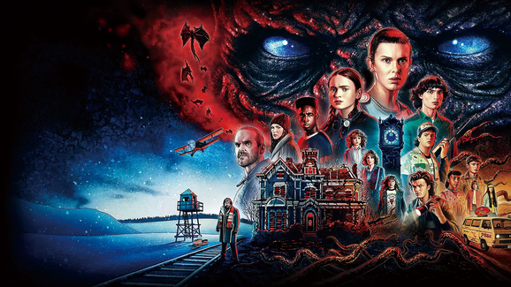

위노나 라이더, 데이비드 하버와 핀 울프하드, 밀리 보비 브라운, 게이튼 매터래조, 케일럽 매클로플린, 나탈리아 다이어, 찰리 히턴 등이 출연한다. 
80년대 미국, 인디애나 주의 작은 마을에서 행방불명된 소년. 이와 함께 미스터리한 힘을 가진 소녀가 나타나고, 마을에는 초자연 현상들이 일어나기 시작한다. 아들을 찾으려는 엄마와 사라진 친구를 찾는 소년들은 정부의 일급비밀 실험의 실체와 무시무시한 기묘한 현상들에 맞선다.
2016년 7월 15일 첫 번째 시즌이 공개되며 많은 호평을 받았고, 2017년 10월 27일 시즌 2가 공개되었으며, 시즌 3는 2019년 7월 4일 공개되었다. 시즌 4 1부는 2022년 5월 27일에 공개되었으며, 시즌 4 2부는 2022년 7월 1일 공개되었다. 또한 시즌 5가 마지막 시즌이라고 한다. 시즌 5로 기묘한 이야기의 본편은 막을 내리지만 세계관 속 새로운 미스터리, 새로운 어드벤처, 예상치 못한 새로운 영웅들에 대한 스핀오프작들이 나올 것이라고 한다.
(작성시점:2022년)